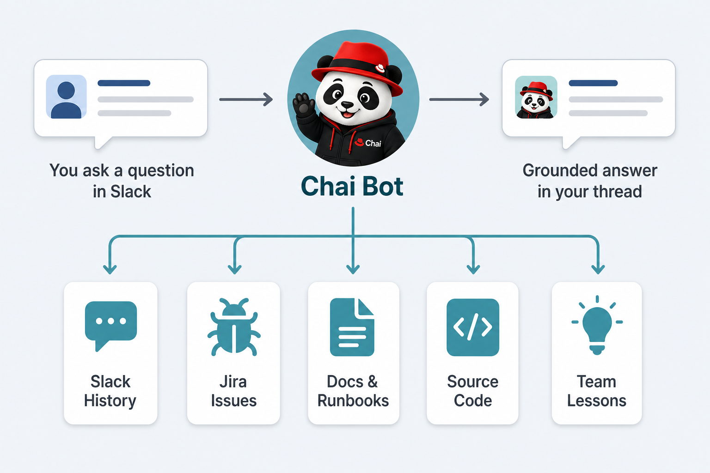
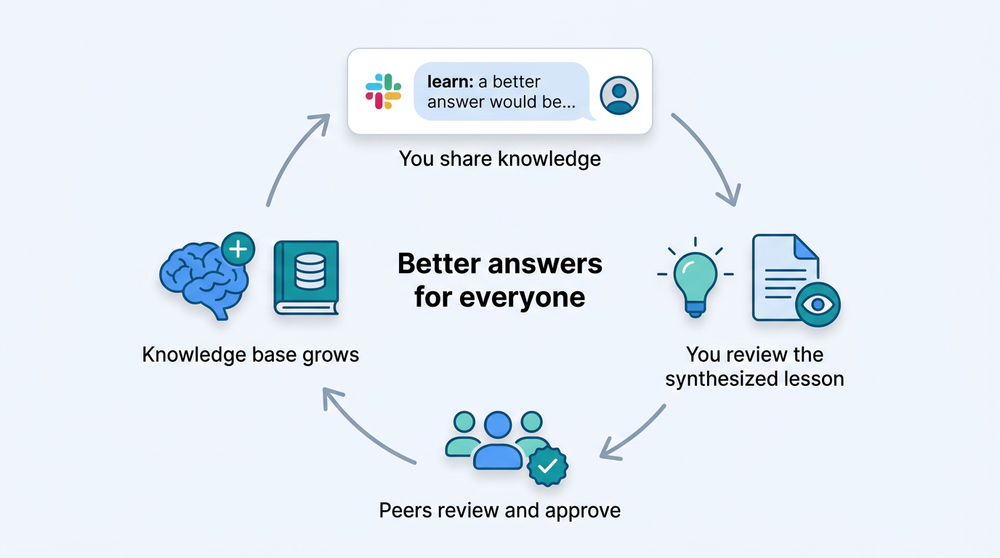

What Is Chai Bot?
Chai Bot (CHannel AI) is an AI assistant that lives in your Slack channels. It helps you find answers, look things up, and get work done — all without leaving the conversation.
Here's what makes it useful:
- Knowledge. The bot can search through your team's Slack conversations, Jira issues, documentation, runbooks, and source code to find relevant answers.
- Live lookups. Need the details on a Jira issue? Want to check if CI is failing? The bot can query live systems and bring back current information.
- Actions. When workspace tools are enabled, the bot can clone repos, open pull requests on GitHub and merge requests on GitLab, file issues, and review code — all using its bot account.
- Visualizations. The bot can generate diagrams (architecture, workflows, state machines) and data charts (line, bar, scatter, pie) with legends, annotations, and interactive versions you can explore in your browser.
- Feedback. Your feedback helps track trends and identify areas for improvement, keeping the bot's quality on an upward trajectory.

Personas: Team-Adapted Agents
When you interact with Chai Bot — whether in a channel or the Chat tab — you are talking to a specific persona. A persona is more than a name: it is a complete agent profile built for a particular team. Each persona combines carefully curated system instructions, knowledge, specialized tools, access boundaries, and response style needed for that team's work.
- Knowledge scope — the docs, history, and context the persona can draw from.
- Tool scope — only the tools that are useful and safe for that team.
- Access scope — explicit permissions and channels where actions are allowed.
- Behavior scope — team-specific instructions, priorities, and communication style.
This separation keeps each persona focused and understandable. Instead of one giant assistant that tries to know everything about every team, you get purpose-built assistants that stay accurate in their area of expertise.
Chai Bot is already serving multiple teams. It can be configured for any team — with your own channels, knowledge bases, and tools.
Getting Started
Opt In
Before the bot will process your messages, you need to give consent:
@chai-bot /consentThis is a one-time step. Until you consent, your messages are ignored — even in threads where the bot is active.
Ask a Question
Mention the bot in a Slack thread with your question:
@chai-bot What is the process for creating an advisory?The bot will search your team's knowledge bases, check live systems if relevant, and respond in the thread.
Follow Up
Continue the conversation in the same thread. The bot remembers the full context of the discussion, so you can ask follow-up questions, refine your query, or dig deeper without repeating yourself.
Chat (Direct Message)
For private conversations, open the Chat tab (click the bot's name, then "Chat"). First, choose a persona — each one is tuned for a different area, with its own knowledge sources and tools.
- Click the pencil-on-paper icon at the top of the Chat tab to start a new chat. If you haven't selected a persona yet, the bot will guide you through the available options.
- Pick a persona and accept the disclaimer.
- Start chatting — just type your question, no @-mention required.
Your persona selection is saved and persists across sessions. You can change it at any time from the bot's Home tab in Slack.
Thinking Effort
When selecting a persona for direct messaging, you can also set a thinking effort level (low, medium, high, or max). Higher effort means the bot spends more time reasoning before answering — useful for complex questions. Lower effort gives faster, lighter responses for simple lookups. The default is high.
You can also ask the bot to change its effort mid-conversation (e.g. "switch to max effort for this next question") and it will adjust on the fly.
Quick Reference
| Command | What It Does |
|---|---|
@chai-bot /consent | Opt in to message processing |
@chai-bot /forget | Revoke consent and delete your feedback data |
@chai-bot /data-request | Export your stored data as a CSV |
Try It Out
Want to see Chai Bot in action? Head over to a channel where the bot is active and try asking some questions. Here are a few ideas to get you started:
| Goal | Example |
|---|---|
| Learn about history and architecture | @chai-bot What is the history of iptables in OpenShift? |
| Find out who owns something | @chai-bot Who owns the cluster-bot? |
| Understand team processes | @chai-bot How are errata advisories created for an OpenShift release? |
| Get CI and test insights | @chai-bot What is the median time a pull request remains open? |
| Check infrastructure health | @chai-bot Is there anything degraded on the status dashboard? |
| Look up a live Jira issue | @chai-bot What is the current status of OCPBUGS-42501? |
| Explore release status | @chai-bot What are the latest accepted 4.18 amd64 nightly releases? |
| Visualize data | @chai-bot Show me a chart of CI pass rates over the last week |
| Open a pull request | @chai-bot Open a PR against openshift/my-repo to update the README |
| Teach the bot | @chai-bot please remember that when triaging CI failures, always check pod events for OOMKilled first |
Remember to run @chai-bot /consent first if you haven't already. Then just start a thread and ask away!
What Can It Do?
Chai Bot has a range of capabilities. Not every channel has every feature — your team's bot is configured with the tools that make sense for your context.
Answer Questions from Your Team's Knowledge Base
The bot draws on dedicated, continuously updated knowledge bases built from your team's real content — Slack conversations, Jira issues, GitHub repos, Google Drive documents, and web pages. Content is semantically indexed so the bot understands meaning, not just exact matches. When you ask a question, the bot searches multiple knowledge bases in parallel, applies metadata filters, and synthesizes the results into a single coherent answer.
Look Up and Manage Jira Issues
Fetch issue details including descriptions, comments, and live state (status, type, priority) from the Jira API. Run JQL queries, create new issues, add comments, assign issues, and transition status — all from Slack.
Analyze CI Jobs
Inspect Prow job status, search build logs for specific errors, and understand test failures. The bot can parse job URLs, show pod lifecycle details, and extract relevant log excerpts.
Check Infrastructure Status
See what's healthy or degraded on the status dashboard. The bot can report active outages, component health, and sub-component details.
Fetch Web Content
Pull information from trusted web domains on demand — useful for checking documentation, reports, or YAML configurations.
Work in an Isolated Workspace
When the bot needs to clone a repository, run a script, build an image, or inspect code, it creates a temporary workspace — an isolated container running on dedicated infrastructure, separate from the bot itself. The workspace is created on demand, used for the task, and automatically cleaned up afterward. This means the bot can safely run exploratory workloads without risk to the systems it connects to.
Open Pull Requests, Merge Requests, and Issues
Ask the bot to open a GitHub pull request or GitLab merge request, file issues, or review code changes — it can interact with both GitHub and GitLab using its bot account. Useful for turning a conversation into action without leaving Slack.
Look Up Team and Org Info
Find out who owns a repository, Jira component, or service. The bot can search organizational data to help you find the right team or escalation contact.
Look Up Advisories and CVEs
Fetch details on advisories (RHSA, RHBA, RHEA) by ID — synopsis, severity, ship date, CVEs fixed, and bugs addressed. Also look up specific CVEs for CVSS scores, affected products, and fix status.
Read Google Documents
Paste a Google Docs, Sheets, or Slides URL into the conversation and the bot can read, summarize, or search within it. The bot can also read PDF files stored in Google Drive.
Check Release Status
Query release streams to see accepted and rejected payloads, verification job results, and upgrade history across architectures.
Help You Onboard
Some teams have guided onboarding topics configured. The bot can walk you through them, track your progress, and help you ramp up on team-specific processes and tools.
Providing Feedback and Teaching the Bot
Feedback: Helping Track Trends
Your feedback helps the team track how well the bot is performing over time. Feedback is not incorporated into the knowledge base, but it helps identify areas that need improvement.
Quick Feedback
React to any bot message with a thumbs-up or thumbs-down emoji to signal whether the response was helpful.
Detailed Feedback
For more context, mention the bot with your feedback:
@chai-bot feedback: The response about CI failures could be improved by...
Teaching the Bot: Verified Knowledge
Beyond tracking trends, you can directly improve the bot's answers by teaching it lessons. If you know a better answer or want to share process guidance, just tell the bot in natural language:
@chai-bot please remember that when creating advisories for a z-stream release, always check...The bot automatically detects when you are teaching it something and synthesizes your guidance into a lesson. It shows you a preview with Submit, Edit, and Cancel buttons. Once you submit, the lesson is posted to a review channel where your peers can approve or reject it.
Approved lessons become part of a verified knowledge base. The bot checks verified knowledge first — before engaging other tools or searching historical datastores. This means peer-approved guidance takes priority over older conversations or outdated documentation. Over time, this creates a curated, authoritative layer of team knowledge that continuously improves the quality of answers.
Newer Lessons Win
When multiple verified lessons address the same topic but contradict each other, the bot trusts the newer lesson. You can correct outdated lessons simply by submitting a new one — you don't need to find and delete the old one.
Shared vs. Private Lessons
When a reviewer approves a lesson, they choose how widely it should be shared:
- Approve & Share — the lesson becomes visible to all personas across all teams. Use for knowledge that is broadly applicable.
- Approve for Persona Only — the lesson is private to the persona (channel) where it was submitted. Use for team-specific procedures.
Self-Learning
While helping you with a task, the bot may discover a durable fact and propose a lesson on its own. You decide whether it's worth keeping — it goes through the same peer review process as any other lesson.
Lesson Quality Over Time
The bot monitors lesson quality during normal use. When it encounters a lesson that is outdated or no longer relevant, it can propose that the lesson be removed. Deletion proposals go to a review channel for human approval — the bot cannot delete lessons on its own.
Follow-Up Tasks
You can ask Chai Bot to check on something later. Just describe what you want and when:
@chai-bot check on OCPBUGS-12345 tomorrow morning and let me know if it's resolvedThe bot will schedule a one-shot follow-up task and confirm the time. When the scheduled time arrives, the bot posts an update in the same thread with the results.
Follow-ups are one-shot (no recurring tasks), can be scheduled up to 90 days in the future, and you can have up to 10 pending follow-ups at a time.
Interactive Action Buttons
When Chai Bot recommends an action that requires your approval — for example, force-accepting a payload or closing a set of Jira issues — it may present action buttons below its response. Click a button to approve or reject the proposed action. Buttons are one-shot: once clicked, they are replaced with a status indicator.
What Does It Know?
Chai Bot's answers are grounded in your team's actual content. Here are the types of content that can be made available:
| Content Type | What It Includes |
|---|---|
| Slack Conversations | Past discussions, troubleshooting threads, decisions, and solutions from your team's channels |
| Jira Issues | Issue details including status, priority, description, and comments |
| Documentation & Runbooks | Markdown files, guides, and runbooks from GitHub and GitLab repositories |
| Google Drive | Docs, Slides, Sheets, and PDFs from shared Drive folders |
| Web Pages | Public documentation, blogs, tutorials, and reference pages |
| Source Code | Source files from repositories, searchable by content |
| Verified Knowledge | Human-approved lessons submitted by team members |
Each team chooses what content feeds into their bot. All sources are synced automatically and kept up to date.
Public forum channels and private team channels can have different knowledge bases. Sensitive content from a private team channel stays isolated and is never exposed through a public forum bot.
Where Is It Available?
Chai Bot is active in specific Slack channels configured by each team. It responds when you @-mention it in a thread. You can also chat with it via the Chat tab.
Different channels may have different capabilities and knowledge bases. In the Chat tab, the persona you select determines which knowledge bases and tools are available.
To find out if the bot is available in your channel, just try mentioning it. If it's not configured for that channel, it will let you know.
Public vs. Internal Channels
- Public forum channels — the bot has access to publicly shared knowledge. Anyone in the channel can use it.
- Private team channels — the bot also has access to internal knowledge. Content stays isolated from the public bot.
Getting Chai Bot for Your Team
Chai Bot can be configured for any team's Slack channels. Here's what your team gets to choose:
- What it knows — which Slack channels, Jira projects, GitHub repos, Drive folders, and web pages to index
- What it can do — which tools to enable (Jira lookup, CI analysis, workspaces, org data, etc.)
- How it behaves — custom instructions that shape the bot's persona, priorities, and domain expertise
- Where it lives — public forum channel, private team channel, or both
Team members can also teach the bot lessons specific to your workflows, building a verified knowledge base over time.
Reach out in #chai-users on Slack to get started.
Using Chai Bot from Your IDE (MCP)
Chai Bot can be used directly from Cursor, Claude Code, or Claude Desktop via the Model Context Protocol (MCP). This gives your IDE access to the same knowledge bases and tools available in Slack.
Generating a Token
- Open the Chai Bot Home tab in Slack (click the bot's name, then Home).
- Click the "MCP Tokens" button.
- Select the persona you want to connect to.
- Optionally choose a thinking effort level. This effort level is baked into the token.
- Click Generate Token. The token and setup instructions will be sent to you via DM.
Setup: Claude Code CLI
Copy and paste the command from the MCP Tokens modal. It connects Claude Code directly to the MCP server over HTTP:
claude mcp add --scope user chai_art_internal --transport http \
--header "Authorization: Bearer <YOUR_TOKEN>" \
-- https://<host>/personas/art_internal/mcpNo extra tools or proxies are needed. Claude Code connects directly to the MCP server.
Setup: Cursor
Add an entry to ~/.cursor/mcp.json:
{
"mcpServers": {
"chai_art_internal": {
"url": "https://<host>/personas/art_internal/mcp",
"headers": {
"Authorization": "Bearer <YOUR_TOKEN>"
}
}
}
}Token Lifecycle
- Tokens expire after 30 days of inactivity.
- Tokens have a maximum lifetime of 365 days regardless of activity.
- You can regenerate or view your token at any time from the MCP Tokens modal.
- Generating a new token invalidates the old one.
- Treat your token like a password — do not share it or commit it to source control.
Troubleshooting
- Connection drops after idle period: Reconnect via
/mcpin Claude Code. - Authentication errors: Your token may have expired. Regenerate from the Home tab.
- "Persona not available": The persona may have been renamed. Generate a new token.
Privacy and Data
Consent Is Required
Your messages are not processed by AI until you explicitly opt in with @chai-bot /consent. If you haven't consented, your messages are completely ignored — even in threads where the bot is active and other users are interacting with it.
Non-Consented Users in Threads
If you're in a thread where the bot is active but you haven't consented, your messages are filtered out. The bot does not see or process them.
Revoking Consent
@chai-bot /forget revokes your consent and deletes all feedback you've provided. After this, the bot will no longer process your messages.
Data Export
@chai-bot /data-request exports your stored data as a CSV file delivered to you directly.
What Is Stored
- Consent status — whether you have opted in or out.
- Session data — conversation content is stored in a database to maintain context across interactions. Sessions are automatically deleted after 90 days.
- Feedback metadata — your feedback text (with user mentions removed), emoji reactions on bot messages, and usage metrics.
- Submitted lessons — if you teach the bot a lesson, the synthesized lesson text is stored for review and, if approved, in the knowledge base.
How Session Data Is Used
Session data is used solely to maintain conversation context. Conversation content is not used to train AI models, is not shared outside the system, and is automatically deleted after 90 days.
Slack History in Knowledge Bases
Some team channels have their Slack conversation history indexed so the bot can search past discussions. Slack handles are automatically anonymized before being incorporated into knowledge bases.
Slack history indexing is separate from the /consent command (which only controls live interactions). If you want your messages excluded from Slack history indexing, you can opt out via a separate form — the opt-out applies to all historical and future content across all channels.
Data Access Summary
| Context | Bot Sees Messages? | Indexed? |
|---|---|---|
| Channels where bot is active | Yes — from consented users in @-mentioned threads | Yes — opted-out users excluded |
| Channels where bot is NOT active | No | No |
| DMs with Chai Bot | Yes | No — never indexed |
| DMs between users | No | No |
Advanced Use Cases
Scheduled Tasks
Chai Bot can run tasks on a recurring schedule and post results to a channel. If there is nothing new to report, it stays silent — no noise. Teams use this to automate routine checks. Examples already in production:
- Daily build health reports — each morning the bot checks container image and RPM build status and posts a summary of anything needing attention.
- Payload monitoring — the bot checks whether new CI payloads have been accepted or rejected, and alerts the team on changes.
- CI health summaries — periodic digests of test pass rates and job failures to help spot regressions early.
Persona-to-Persona Collaboration (Ports)
Because each persona is focused on a single team's domain, a task that spans multiple teams raises a natural question: how does information flow? Rather than overloading one persona with everything, Chai Bot uses ports — controlled communication channels that let personas collaborate directly.
For example, a release-management persona might need build information that only the build-team persona has access to. The release persona opens a port connection, asks a specific question, receives an answer, and closes the connection. Each persona stays focused on what it knows best.
All of this happens behind the scenes. As a user, you may see the bot mention that it consulted another persona, but the coordination is automatic.
Limitations
- Accuracy — As an AI system, the bot may occasionally produce incorrect or outdated information. Always verify critical details through official documentation or team contacts.
- Thread length — The bot processes up to 300,000 words per thread. Very long threads may be truncated.
- Thread-based in channels — In channels, the bot responds only when @-mentioned in a thread. In the Chat tab, no @-mention is needed.
- Channel-specific — The bot only operates in channels where it has been configured.
- Not for sensitive or customer data — Chai Bot is not approved for use in channels that contain highly sensitive data or customer data.
Contact and Support
For questions, issues, feature requests, or to get Chai Bot configured for your team:
- Join #chai-users on Slack
- Follow #chai-bot-news for new feature announcements and development updates
- Provide feedback directly to the bot using the methods described above